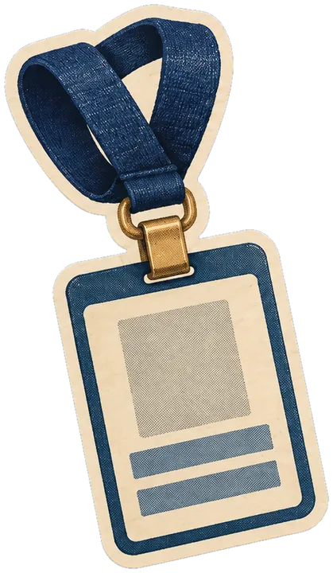

기획 지원 AI 스킬 2종 위메이드엑스알 AI 엔지니어 인턴, 2026.08~2026.11
기획자가 문서를 찾는 일과 전달하는 일을 AI 스킬로 만들었습니다
내부 기획자들이 두 스킬을 실무에 사용 인턴을 끝내면서 설치법, 사용법, 되돌리는 법을 다음 담당자에게 넘겼습니다.
| 잰 것 | 결과 | 견준 대상 |
|---|---|---|
| 맞힌 질문 | 12개 중 12개 | 문서 탐색 스킬의 답 |
| 쓴 토큰 | 12.7% 적음 | 일반 AI가 쓴 토큰 |
| 응답 시간 | 비슷함 | 일반 AI의 응답 시간 |
작품 소개
한 줄 소개, 역할 나눔, 작품 정보
문서 탐색 스킬은 기획자가 묻는 말을 풀어 여러 기획 문서를 찾고, 지금도 유효한 내용인지 가려 근거와 함께 답합니다. 발표자료 스킬은 기획 문서에서 핵심을 골라 한 줄 카피와 대표 그림으로 바로 발표할 자료를 만듭니다.
기획 지원 AI 스킬 2종은 받은 과제의 범위를 줄여 사내 기획자가 실무에 쓰는 데까지 간 뒤 다음 담당자에게 넘긴 사례입니다.
역할 나눔
과제 범위와 판단 규칙을 제가 정했고 확인과 인계도 제가 했습니다. 코드는 AI 코딩 도구로 짰습니다.
- 내가 정한 것
- 과제 범위와 순서, 문서가 지금 유효한지 판단하는 규칙, 발표자료가 원문에서 남길 것과 버릴 것
- AI로 짠 것
- 두 스킬과 검사기, 조립기, 설치와 제거와 되돌리기 도구의 코드.
- 내가 확인한 것
- 일반 AI와 같은 질문 12개 비교, 고칠 때마다 이전 질문 다시 돌리기, 발표자료의 화면과 이동, 인계 파일이 원본과 같은지
- 만든 사람
- 이주형. AI 엔지니어 인턴(체험형)
- 기간
- 2026.08~2026.11. 인턴은 끝났습니다.
- 단계
- 사내 기획자가 실무에 사용, 다음 담당자에게 인계
- 쓴 도구
- AI 스킬 2종, 검사기와 조립기, 설치와 제거와 되돌리기 도구

현장 상황
받은 과제와 기획자가 시간을 쓰는 곳
위메이드엑스알에서 받은 과제는 기획자의 보고 자료 생성과 발상 지원이었습니다. 기획자는 본 기획에 앞서 관련 문서를 찾고 그 내용이 아직 유효한지 확인하는 데 시간을 가장 많이 씁니다. 찾은 내용을 팀에 전달할 자료를 만드는 데도 다시 시간을 씁니다.
기획 문서는 같은 주제로 여러 판이 남아 있어, 가장 최근에 고친 파일이 틀린 판일 때도 있습니다.
회사가 정한 목표는 기획팀이 계속 쓰고 예전 방식으로 돌아가지 않는 것이었습니다. 그래서 기능 수보다 기획자가 쓰는지와 예전 방식으로 되돌아가지 않는지를 봤습니다.
정한 것과 버린 것
네 건은 펼쳐 두고 두 건은 접었습니다
진행하는 동안 과제 범위가 15번 바뀌었습니다. 그 가운데 9건은 제가 먼저 꺼낸 안입니다.
받은 범위를 기획 지원으로 좁혔습니다
처음 받은 범위에는 성과를 재는 방법이 다른 과제가 섞여 있었습니다. 회사가 정한 목표는 기획팀이 계속 쓰고 예전 방식으로 돌아가지 않는 것이었습니다. 그 목표로 볼 수 있는 기획 지원만 남기자고 제안했습니다.
- 버린 안
- 받은 범위를 그대로 모두 만들기
- 이유
- 성과를 재는 방법이 다른 과제가 섞여 있었습니다.
문서 탐색을 1단계로, 발표자료를 2단계로 두었습니다
받은 과제는 보고 자료 생성과 발상 지원이었습니다.
- 버린 안
- 보고 자료 생성부터 만들기
- 이유
- 보고 자료 생성과 발상 지원 둘 다 과거 문서를 찾는 일이 먼저였습니다.
문서가 지금 유효한지는 문서 안에 적힌 역할, 상태, 적용 범위로 판단합니다
역할은 그 문서가 정본인지 참고인지를 뜻합니다. 문서끼리 값이 충돌하면 그 항목만 보류하고 나머지 답은 이어 갑니다. 보류한 항목은 "문서끼리 어긋나는 곳" 칸에 원문과 함께 보여 줍니다.
- 버린 안
- 수정일이나 파일명으로 판단하기, 충돌하면 답 전체 멈추기
- 이유
- 기획 문서는 같은 주제로 여러 판이 남아 있어 가장 최근에 고친 파일이 틀린 판일 때가 있습니다.
틀린 답을 하나씩 고치지 않고 원인이 같은 실패를 묶어 고쳤습니다
같은 실패가 반복되면 원인이 같은 것끼리 묶어 한 번에 고쳤습니다. 고칠 때마다 이전에 맞히던 질문을 자동으로 다시 돌려 답이 바뀌지 않았는지 봤습니다.
- 버린 안
- 틀린 답마다 하나씩 고치기, 지침을 계속 덧붙이기
발표자료는 원문을 줄이기 전에 남길 것을 먼저 고릅니다
설계 규칙
발표자료는 원문을 줄이기 전에 남길 것을 먼저 고릅니다
설계 규칙원문의 중심 경험과 변화, 꼭 필요한 관계를 먼저 고르고 수단과 확장 계획은 핵심과 구분합니다. 장마다 핵심은 한 줄 카피로, 구체적인 작동과 조건은 두 줄 이내 설명으로 나눕니다. 그림은 뜻, 수량, 순서를 보여 줄 때만 넣습니다. 기획 원문은 고치지 않습니다.
- 버린 안
- 길이만 줄이는 요약, 내용이 넘치면 글꼴 줄이기
- 이유
- 길이만 줄이는 요약은 구현 세부를 나열하거나 나중 계획을 핵심 자리에 올리기 쉽습니다.
판단 규칙을 고칠 때는 바꿀 문구와 예상 영향을 먼저 보여 줍니다
인계 문서에 적은 원칙
판단 규칙을 고칠 때는 바꿀 문구와 예상 영향을 먼저 보여 줍니다
인계 문서에 적은 원칙다음 담당자가 규칙을 고칠 때 기존 문구, 바꿀 문구, 예상 영향을 먼저 보고 고른 범위만 반영하도록 적었습니다.
- 버린 안
- 문제가 생길 때마다 지침 덧붙이기
만든 것과 작동 순서
스킬 두 개, 각각 네 단계
문서 탐색 스킬. 기획자 질문에서 근거 있는 답까지
질문 풀기
정리되지 않은 말로 물어도 AI가 무엇을 찾는 질문인지 먼저 풉니다.
여러 문서 찾기
관련 기획 문서를 여러 개 찾아 내용을 서로 대조합니다.
유효한지 가리기 내 규칙
문서에 적힌 역할, 상태, 적용 범위로 지금 유효한 문서인지 판단합니다.
네 칸으로 답하기
유효한 규칙, 원문 근거, 문서끼리 어긋나는 곳, 아직 정하지 못한 것으로 나눠 보여 줍니다.
발표자료 스킬. 기획 원문에서 열어서 바로 발표하는 자료까지
핵심 고르기 내 규칙
원문의 중심 경험과 변화, 꼭 필요한 관계를 남깁니다.
형식 한 번만 묻기
킥오프, 한 장 요약, 설명 발표, 상세 공유, 관심을 여는 발표 다섯 가지 중 고릅니다. 정하지 않으면 킥오프를 추천합니다. 이미 정했으면 다시 묻지 않습니다.
한 줄 카피와 대표 그림
장마다 핵심을 한 줄로 쓰고 설명은 두 줄 이내로 보충합니다.
화면 확인
원고 보존, 줄 수, 이동은 기계로 검사합니다. 뜻과 보기 좋음은 화면을 열어 따로 본 뒤 넘깁니다.
인계할 때 넘긴 것
- 설치법과 사용법, 요청 예시, 파일별 책임, 고치는 순서, 되돌리는 법을 적은 문서 한 편
- 설치, 제거, 되돌리기 도구
AI로 짠 것에서 틀린 곳을 잡은 기록
발표자료 스킬 한 건
기계 검사에서 불통과한 발표자료 예시를 통과로 소개하지 않았습니다
예시 하나는 사용자가 확정한 두 줄 카피가 "한 줄" 검사와 충돌해 검사 결과가 불통과였습니다. 이 예시를 "전체 통과"로 소개하지 않았습니다. 발표자료 스킬은 기계 검사 통과와 화면 확인을 따로 적습니다.
숫자와 잰 조건
이 페이지의 숫자는 모두 아래 숫자 대장의 값입니다
숫자 대장
값 4줄, 값마다 잰 조건
숫자 대장
값 4줄, 값마다 잰 조건| 값 | 무엇을 잰 값인지 | 잰 조건과 근거 |
|---|---|---|
| 12개 중 12개 | 문서 탐색 스킬이 맞힌 질문 | 같은 질문 12개를 일반 AI와 문서 탐색 스킬에 똑같이 물은 비교 |
| 12.7% | 일반 AI보다 적게 쓴 토큰 | 같은 비교. 응답 시간은 비슷했습니다. |
| 5종 | 발표자료 형식 | 킥오프, 한 장 요약, 설명 발표, 상세 공유, 관심을 여는 발표 |
| 15건 중 9건 | 진행 중 범위 변경 가운데 제가 먼저 꺼낸 안 | 인턴 기간의 범위 변경을 제가 센 값 |
확인한 방법과 한계
비교, 다시 돌리기, 화면 확인, 인계 파일 대조
- 같은 질문 12개를 일반 AI와 문서 탐색 스킬에 똑같이 물어 답, 토큰, 응답 시간을 견줬습니다.
- 같은 질문을 표현만 바꿔 물어 틀린 답이 나오는 조건을 찾았습니다.
- 문서 탐색 스킬을 고칠 때마다 이전에 맞히던 질문을 자동으로 다시 돌려 답이 바뀌지 않았는지 봤습니다.
- 발표자료는 원고 보존, 줄 수, 이동을 기계로 검사하고 화면과 이동을 열어서 따로 봤습니다.
- 넘긴 파일은 하나하나 원본과 같은지 확인했습니다.
한계
- 비교 시험은 12문항이라 정답률보다 "확인한 질문 12개"로 읽는 편이 정확합니다. 잰 날짜, 정답을 판정한 사람, 일반 AI가 맞힌 개수는 제가 가진 기록에 없어 적지 않았습니다.
- 사용 인원과 조직은 회사 정보라 적지 않았습니다. 화면, 문서, 사내 이름도 회사 자료라 싣지 않았습니다.
기술 정보
쓴 형식과 방식
| 형식 | AI 스킬 2종. 문서 탐색, 발표자료 |
| 문서 탐색 | 질문 뜻 풀기, 여러 문서 조회와 대조, 문서에 적힌 역할과 상태와 적용 범위로 유효 판단, 충돌 항목 보류, 네 칸 답변 |
| 발표자료 | 형식 5종, 원고 보존과 줄 수와 이동을 보는 검사기, 조립기. 기획 원문은 고치지 않습니다. |
| 검증 | 고칠 때마다 이전 질문을 자동으로 다시 돌리는 검사, 일반 AI와 같은 질문 12개 비교, 토큰과 응답 시간 비교 |
| 배포와 인계 | 설치, 제거, 되돌리기 도구와 인계 문서 한 편 |